.jpg)
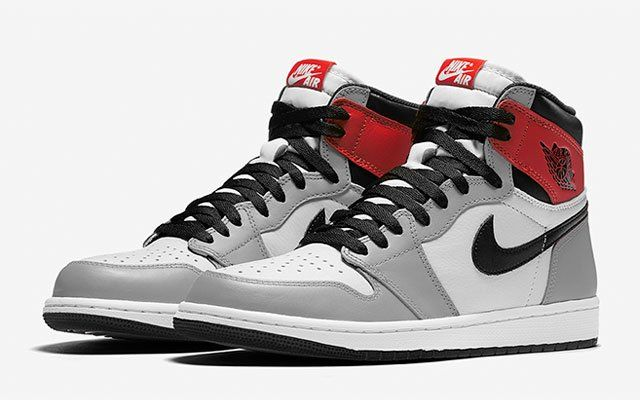
Air Jordan 1
Air Jordan I мгновенно стали хитом, но фанатов очаровал не только их потрясающий внешний вид. Неоспоримая харизма и непревзойденные навыки Майкла Джордана на площадке превратили кроссовки в символ совершенства.
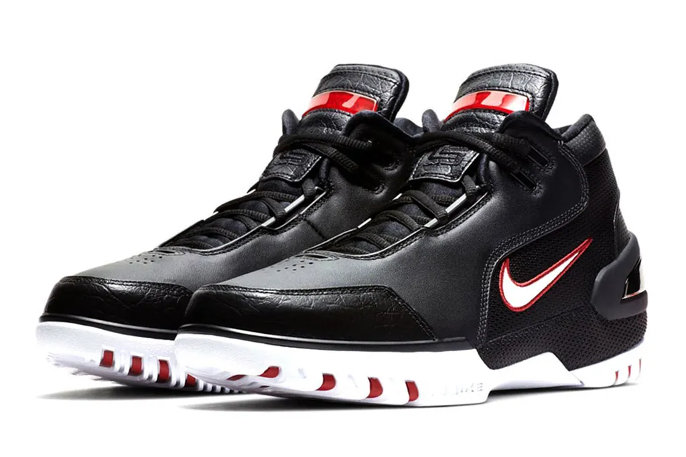
Nike Air Zoom Generation
Сравнив образ мощного и при этом быстрого Леброна с грозным солдатом, дизайнеры вдохновлялись военной экипировкой, оптическими приборами и внедорожниками. Результатом стала модель Nike Air Zoom Generation.Первое издание Nike Air Zoom Generation состоялось в 2003 году. Когда в штабе Nike презентовали кроссовки, Леброну вручили именной кейс с изображением льва и новенькой парой. Эмоции баскетболиста невозможно передать словами — это был восторг.
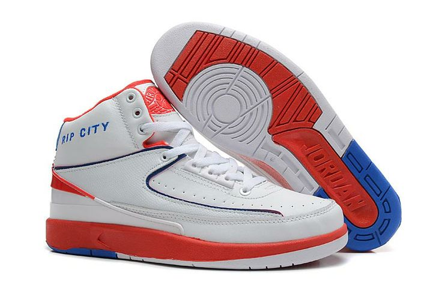
Air Jordan 2
Фанаты устроили бурное празднование, когда Air Jordan 2 появился на прилавках. Они восхищались изысканным дизайном обуви, вниманием к деталям и роскошными материалами, обволакивающими их ноги.
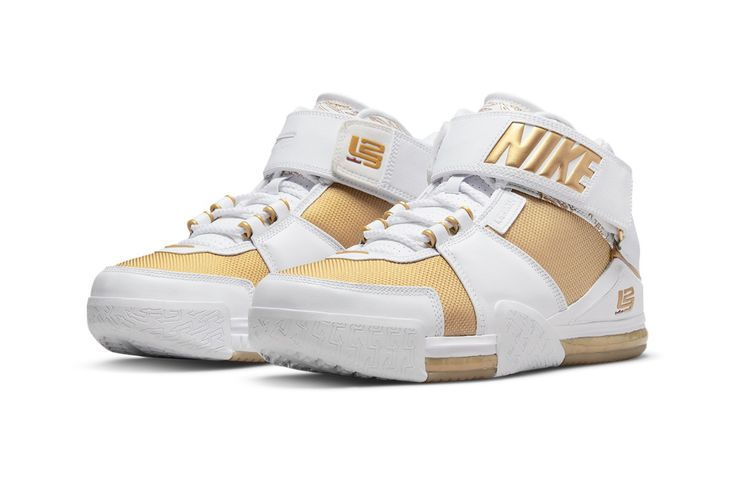
Nike Air Zoom LeBron 2
В кроссовках Air Zoom LeBron 2 у Леброна появился фирменный логотип, состоящий из инициалов и его игрового номера. Кроме того, для баскетболиста разработали собственный рисунок протектора.Кроссовки Nike Air Zoom LeBron 2 поступили в продажу в 2004 году. Силуэт оказал влияние на детализацию в дизайне баскетбольных кроссовок и помог Леброну в первый раз сыграть в матче всех звезд НБА.
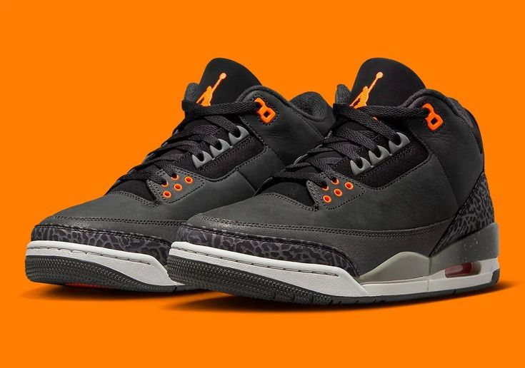
Air Jordan 3
Вдохновленный любовью Майкла Джордана к роскошным автомобилям, Хэтфилд разработал Air Jordan 3 с изящными линиями и плавными изгибами, как у лучших автомобилей. Он представил культовый принт со слонами — элемент дизайна, который придавал обуви нотку дикости и энергии.
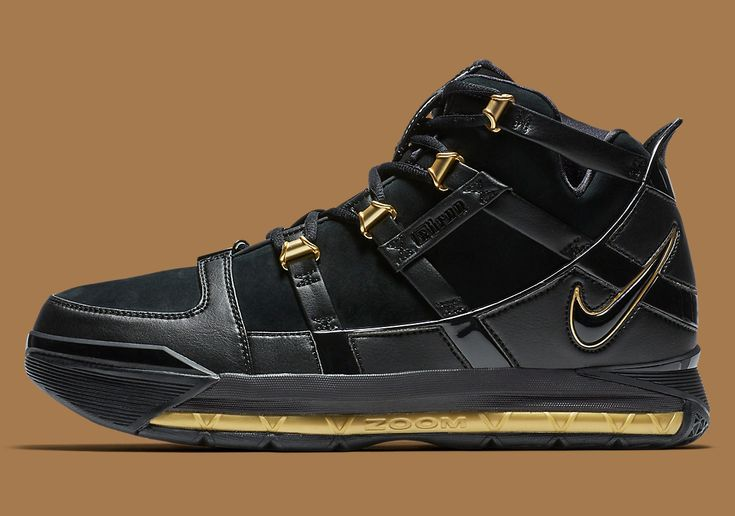
Nike Air Zoom LeBron 3
В третьем поколении кроссовок Леброна нет принципиально новых решений.Первое издание Nike Air Zoom LeBron 3 вышло в 2005 году. В этих кроссовках Леброн Джеймс получил звание самого ценного игрока матча всех звезд НБА.
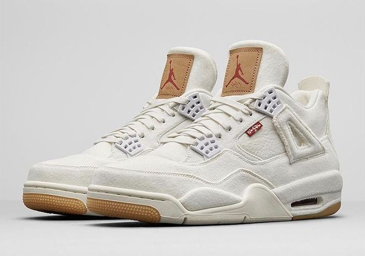
Air Jordan 4
Air Jordan 4 вошли в мировую поп-культуру, закрепив свое место в сердцах спортсменов, художников, музыкантов и даже кинематографистов. В 1989 году известный режиссер Спайк Ли, страстный фанат баскетбола (Go Knicks!) и сам любитель кроссовок, представил Air Jordan 4 в своем фильме «Делай правильно».
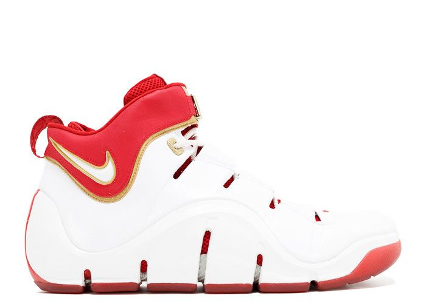
Nike Air Zoom LeBron 4
Когда началась работа над LeBron 4, всем было понятно, что нужно Леброну, чтобы получить максимальное преимущество над соперником. Баскетболист часто выступал в роли атакующего защитника, для него были важны такие характеристики, как легкость, гибкость и амортизация. LeBron 4 по всем параметрам превзошли предыдущие кроссовки линейки. Многие эксперты считают, что именно четвертые «Леброны» вывели серию на новый уровень.Nike Air Zoom LeBron 4 вышли в 2006 году, в своей четвертой персональной паре Леброн проложил путь до финала чемпионата НБА.
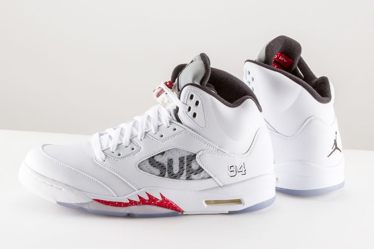
Air Jordan 5
Когда Air Jordan 5 покорил ноги спортсменов и поклонников кроссовок, они стали символом неудержимого роста Майкла Джордана в НБА. В сезоне 1990–1991 годов Джордан показывал огромные цифры, устанавливая личные рекорды результативности – например, его игра с 69 очками против «Кливленд Кэвс». Air Jordan 5 были рядом с ним, становясь свидетелем истории.
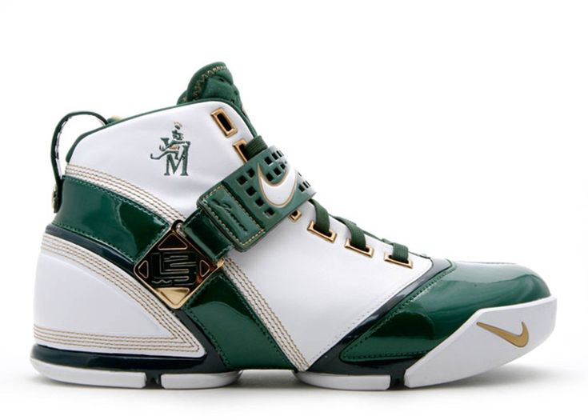
Nike Air Zoom LeBron 5
Еще одни значимые кроссовки. Вместе с выпуском этой модели, спортсмен получил собственную коллекцию одежды, а релиз новинки сопровождался появлением гигантского портрета баскетболиста на билборде в Кливленде.Nike Air Zoom LeBron 5 поступили в продажу в 2007 году и отметились участием в финальной серии НБА.
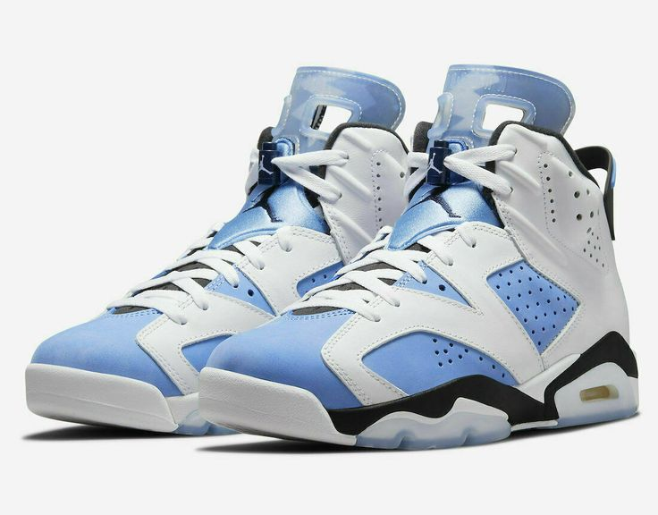
Air Jordan 6
Пожалуй, самым важным в Air Jordan 6 было то, что они стали частью триумфального пути Майкла Джордана к его первому чемпионату НБА. В сезоне 1990–1991 годов команда Джордана «Чикаго Буллз» доминировала в лиге, и после многих разочаровывающих сезонов он привел их в землю обетованную. В зашнурованных кроссовках Air Jordan 6 выступления Джордана были незабываемыми.
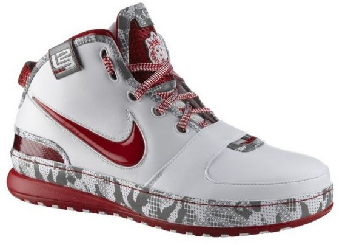
Nike Air Zoom LeBron 6
До выпуска этих кроссовок, все модели LeBron позиционировались исключительно в качестве прогрессивной обуви для баскетбола. Леброн понимал это и хотел изменить концепцию, чтобы кроссовки LeBron появились на улицах.Релиз Nike Air Zoom LeBron 6 состоялся в 2008 году.
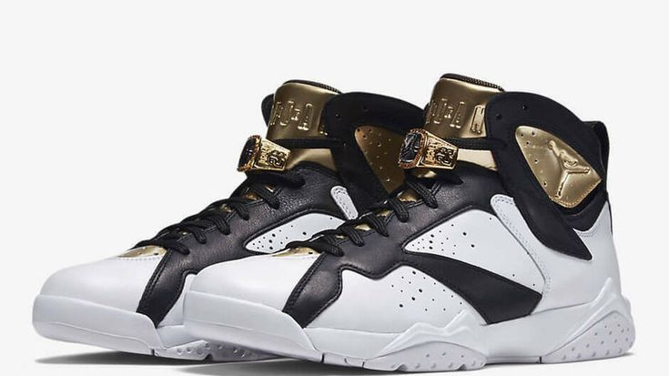
Air Jordan 7
По мере того, как карьера Майкла Джордана достигла новых высот, росла и связь Air Jordan 7 с его невероятными достижениями. В сезоне НБА 1991–1992 годов Джордан привел Чикаго Буллз ко второму подряд чемпионству НБА, укрепив их статус неудержимой силой. С Air Jordan 7 на ногах выступления Джордана были просто завораживающими, заставляя фанатов трепетать, поскольку он превосходил противников и действовал в решающие моменты.
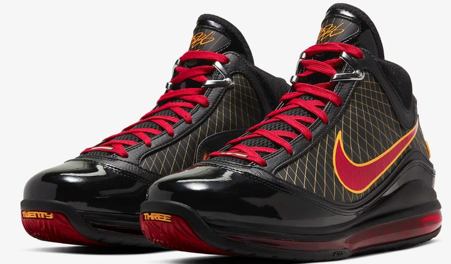
Nike Air Zoom LeBron 7
Nike Air Max LeBron 7 — баскетбольные кроссовки, в которых впервые появилась видимая полноразмерная воздушная подушка.Кроссовки Nike Air Max LeBron 7 вышли в 2009 году. В них Леброн мог уверенно играть на любой позиции и благодаря этому заслужил титул MVP сезона. Специально к серии плей-офф модель издали в эксклюзивной версии с амортизацией Zoom Air.
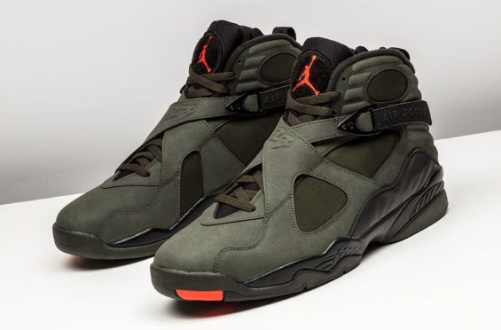
Air Jordan 8
В сезоне НБА 1992–1993 годов Джордан привел «Чикаго Буллз» к третьему подряд чемпионству НБА — выдающийся подвиг, известный как «три-пит». Модель Air Jordan 8 символизировала неустанное стремление Джордана к совершенству, непреклонность и способность привести свою команду к победе. Он отразил суть его баскетбольного величия и стал желанным символом успеха для любителей кроссовок и любителей баскетбола во всем мире.
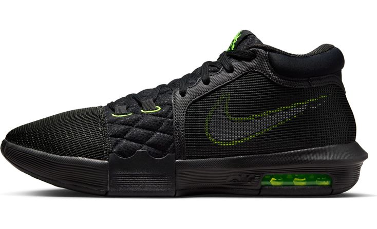
LeBron 8
Первая модель из названия которой убрали все, кроме имени баскетболиста. Этим все сказано.Кроме отличных результатов в профессиональном баскетболе, кроссовки LeBron 8 были изданы в большом количестве уникальных лайфстайл вариаций.
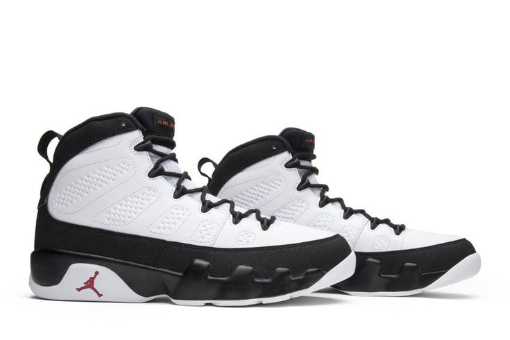
Air Jordan 9
Хотя MJ не играл в Air Jordan 9, Nike позаботилась о том, чтобы они по-прежнему обладали исключительными характеристиками. Обувь имела легкий и прочный верх, обеспечивающий устойчивость и поддержку игроков на площадке. Air Jordan 9 продолжили традицию сочетания моды и функциональности, ставшую синонимом бренда.
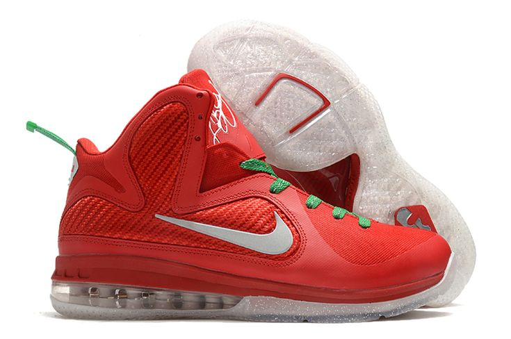
LeBron 9
В этих кроссовках Леброн впервые выиграл чемпионат НБА.Благодаря большому количеству инновационных решений, кроссовки были представлены в рамках линии Elite, в которой выпускаются самые прогрессивные продукты Nike. Официальный выпуск Nike LeBron 9 состоялся в 2011 году. Модель поступила в продажу в ограниченном количестве. Начиная с девятых «Лебронов», сложный и при этом функциональный дизайн стал определяющим фактором в производстве новых моделей.
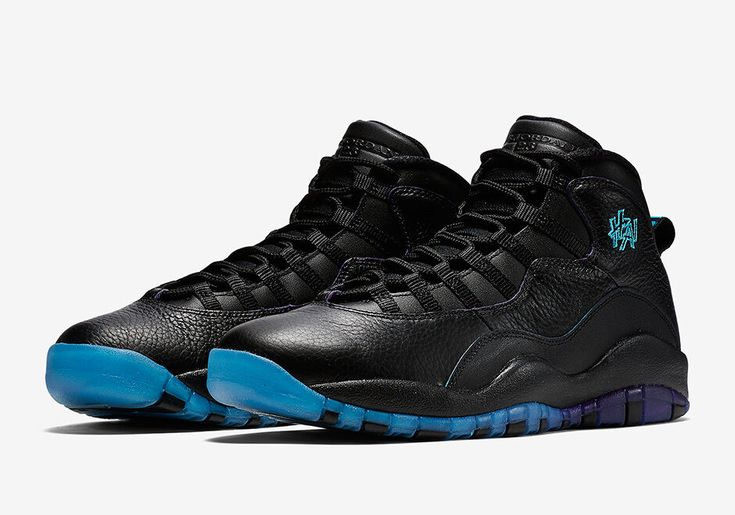
Air Jordan 10
Связь AJ 10 с возвращением MJ вышла далеко за рамки его дизайна. Они стали свидетелями одного из самых запоминающихся выступлений в истории баскетбола — легендарной игры «двойной пятак». 28 марта 1995 года в Мэдисон-Сквер-Гарден Майкл Джордан встретился с командой «Нью-Йорк Никс». Джордан набрал ошеломляющие 55 очков. Это было выступление на века – напоминание о беспрецедентном мастерстве, изяществе и явном доминировании Джордана.
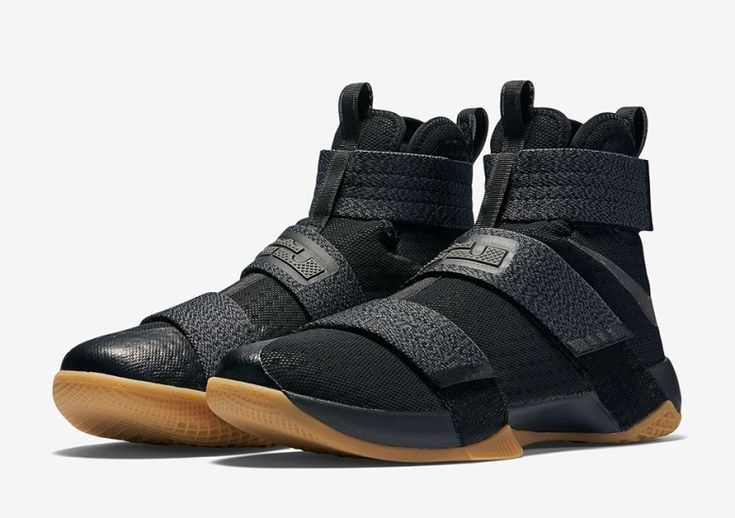
LeBron 10
Одна из самых популярных моделей из линейки Леброна.Также в LeBron 10 впервые применили технологию Nike + для баскетбола. Первое издание Nike LeBron 10 вышло в 2012 году. Начиная с дебютного релиза, кроссовки LeBron 10 производятся не только в спортивной, но и в повседневной версии.
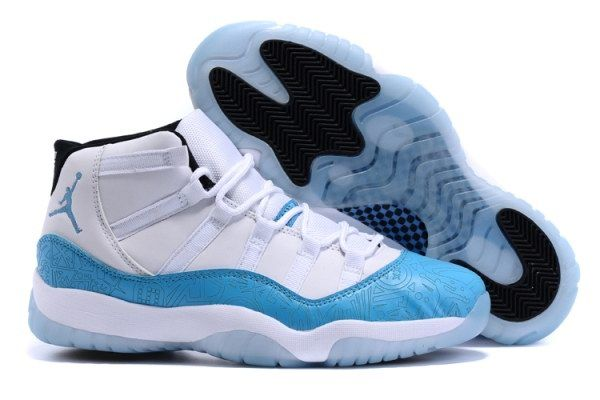
Air Jordan 11
Это была также эпоха, когда фильм «Космический джем» покорил мир, объединив талант Джордана с очаровательными персонажами «Looney Tunes». Но одна яркая звезда затмила всех — Air Jordan 11. Выдающаяся роль Air Jordan 11 в «Космическом джеме» укрепила их место в истории кроссовок и поп-культуры. Это стало больше, чем просто обувь. Они символизировали детские мечты, воображение и силу командной работы. Это вдохновило бесчисленное количество фанатов поверить в то, что они могут достичь невозможного, как MJ и Tune Squad.
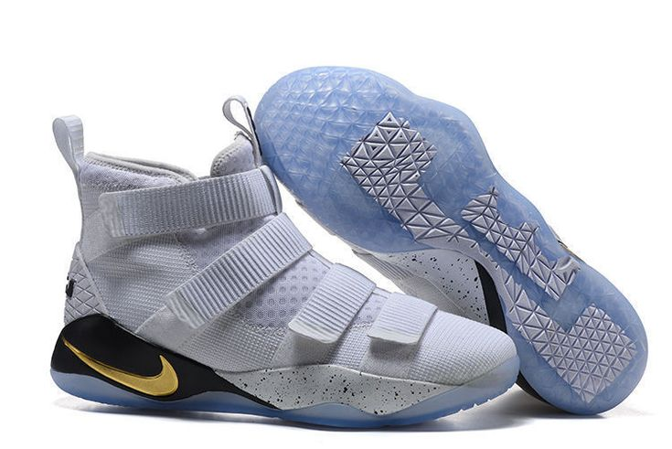
LeBron 11
Кроссовки, которые больше зарекомендовали себя в повседневной среде, чем на баскетбольном поле.На момент дебюта в 2013 году это были самые легкие и самые низкие кроссовки Леброна. Тем не менее, характеристики не позволили модели закрепиться на ногах баскетболиста — по тем или иным причинам Nike переделывал персональные пары Леброна на протяжении всего сезона.
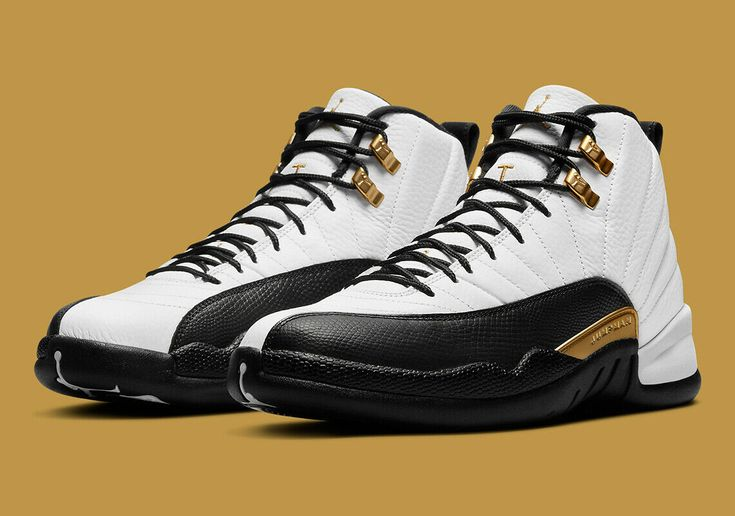
Air Jordan 12
Их отличал смелый верх из кожи или нубука, излучающий ощущение роскоши, которое нашло отклик у любителей обуви. Его самой отличительной особенностью была накладка, напоминающая люверсы корсета, придающая одновременно структуру и визуальный эффект. Этот уникальный элемент дизайна добавил кроссовкам привлекательности и послужил намеком на способность MJ усилить контроль над игрой.
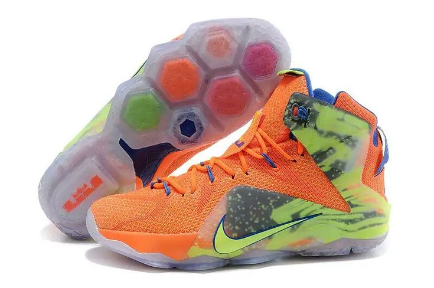
LeBron 12
Для создания двенадцатых именных кроссовок Леброна компания Nike провела множество научных исследований, чтобы в результате получить пару, которая объединит три важнейшие характеристики для баскетбола: амортизацию, гибкость и поддержку. Каждый элемент LeBron 12 разработан с учетом данных, полученных при участии десятков атлетов и самого Леброна Джеймса. Это кроссовки, вдохновленные наукой и открывающие новую главу линейки Nike LeBron.Из-за сложности производства дату релиза пришлось отложить даже после анонса. Модель поступила в продажу в конце 2014 года.
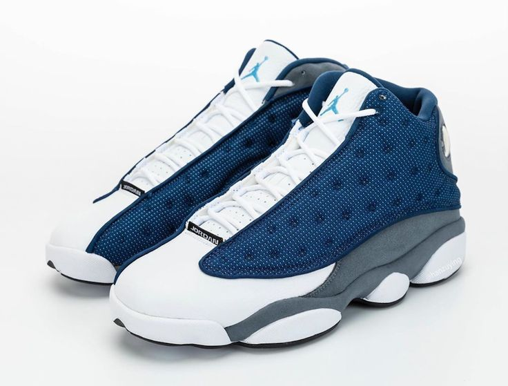
Air Jordan 13
Помимо дизайна и производительности, Air Jordan 13 стали синонимом прозвища Майкла Джордана «Черный кот». Известный своим плавным и, казалось бы, легким стилем игры, MJ двигался с грацией и точностью своего кошачьего альтер-эго. Кроссовки олицетворяли этот образ, расширяя мастерство Джордана на площадке и добавляя интриги своему увлекательному дизайну.
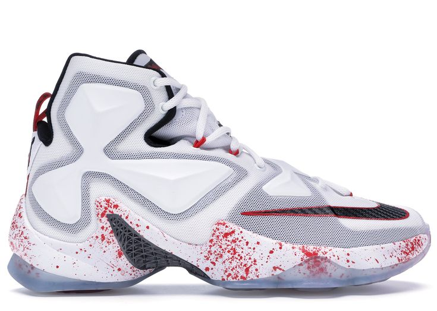
LeBron 13
Вдохновленные местом рождения баскетболиста, кроссовки LeBron 13 обладают похожими характеристиками на предыдущее поколение, но отличаются еще большей производительностью. LeBron 13 созданы в честь города Акрон и штата Огайо, которые подарили миру Леброна и лучших американских космонавтов.Дебют Nike LeBron 13 состоялся осенью 2015 года. Кроссовки также вышли в размерных сетках для школьников и детей.
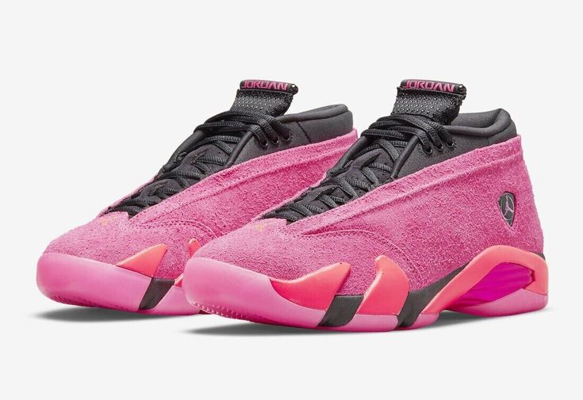
Air Jordan 14
Air Jordan 14 обладал уникальным внешним видом, вдохновленным любовью Майкла Джордана к роскошным спортивным автомобилям. Тинкер Хэтфилд включил элементы дизайна, напоминающие Ferrari, что отражает страсть MJ к дороге. Обувь имела аэродинамические линии, сетчатые панели для воздухопроницаемости и кожух в средней части стопы, которая добавляла нотку элегантности и производительности. Эта обувь, как и ее легендарный владелец, излучала скорость и стиль.В финале НБА 1998 года Джордан надел Air Jordan 14 и привел «Чикаго Буллз» к их шестому чемпионству НБА и второму из двух трехкратных побед.
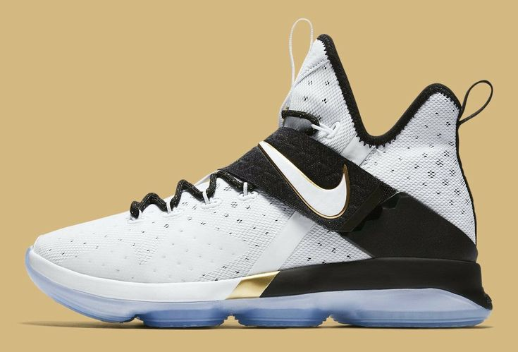
LeBron 14
Как и карьера Леброна Джеймса, его именная линия кроссовок Nike постоянно развивается и меняется с учетом новых пожеланий спортсмена. Вдохновленные скоростью и динамичностью Леброна на площадке, кроссовки LeBron 14 созданы для максимальной концентрации во время игры.Релиз модели провели в новогодние праздники 2017 года.
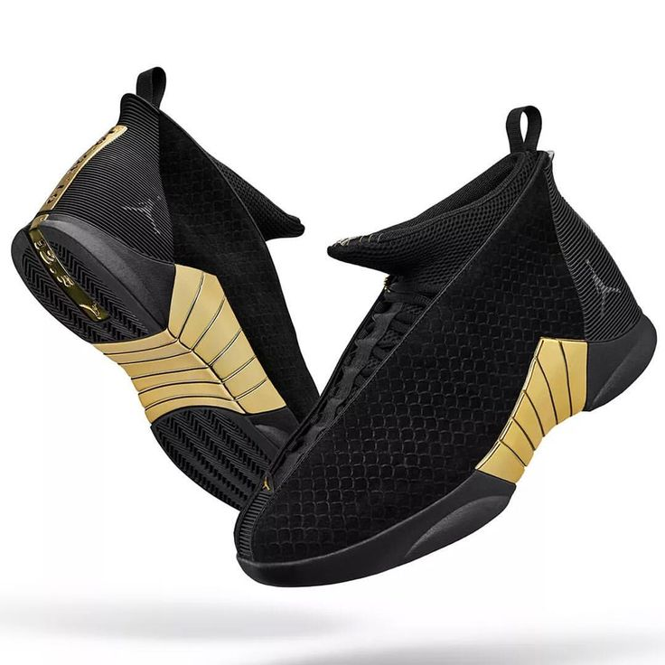
Air Jordan 15
Air Jordan 15 имеют футуристический силуэт, вдохновленный истребителем X-15, передающий ощущение скорости и инноваций. Его самой отличительной особенностью был выступающий язычок, который некоторые ласково называли «саваном». Этот уникальный элемент дизайна должен был имитировать скрытный вид кабины истребителя, но он также стал предметом игривых шуток и вызвал у некоторых удивление.Хотя дизайн Air Jordan 15 был уникальным, он никогда не украшал баскетбольную площадку во времена игры Майкла Джордана.
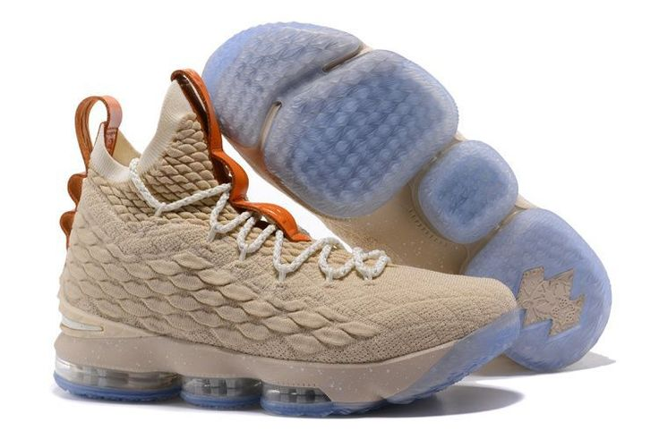
LeBron 15
Это одна из самых эффектных и популярных моделей серии, объединившая новейшие технологии и амбициозный внешний вид для лучшего баскетболиста современности. Модель, посвященная 15-летию карьеры Леброна в НБА, символизирующая брутальный образ спортсмена.Nike LeBron 15 поступили в продажу осенью 2017 года. На момент выпуска это была любимая модель Леброна за всю историю франшизы.
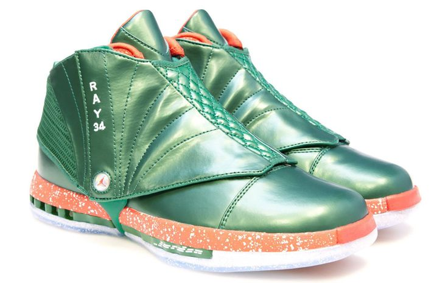
Air Jordan 16
В 2001 году Nike представила Air Jordan 16 — кроссовки, переопределяющие стиль и производительность. Вдохновителем этой обуви был талантливый Уилсон Смит, который взял на себя бразды правления в качестве ведущего дизайнера линии Air Jordan. Смит черпал вдохновение в линиях и материалах элитных итальянских классических туфель и использовал лакированный носок и съемные гетры, позволяющие владельцам настраивать внешний вид и адаптироваться к различным стилям игры. Этот дизайн идеально отражал элегантность и универсальность игры Майкла Джордана.
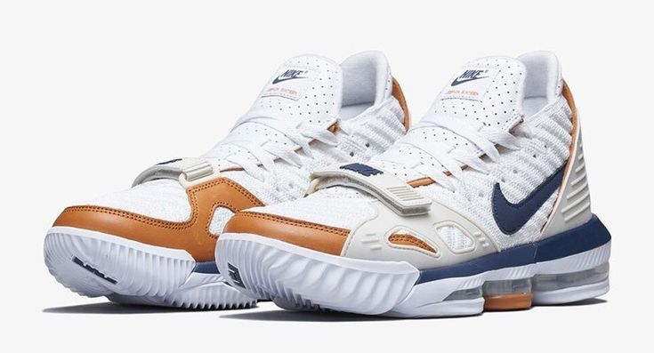
LeBron 16
LeBron 16 стали усовершенствованным продолжением прошлого поколения серии. В этих кроссовках примерно те же характеристики, но есть и новшества, которые на первый взгляд трудно заметить. По просьбе Леброна LeBron 16 сделали низкими, в них изменили материал верха и амортизацию.Модель поступила в магазины осенью 2018 года. Первый релиз прошел в расцветке «Fresh Bred», символизирующей культовую цветовую схему Jordan Brand.
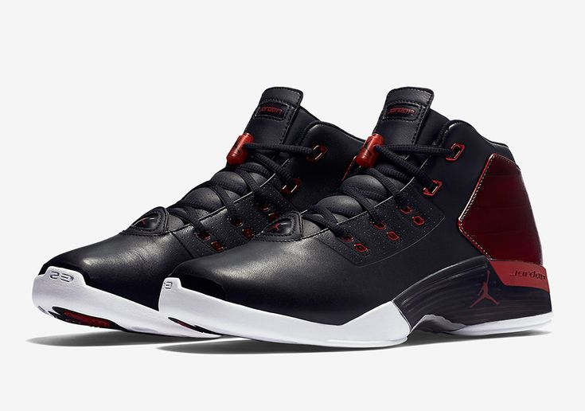
Air Jordan 17
Дизайн Air Jordan 17 стал результатом совместной работы самого Майкла Джордана и Уилсона Смита. Вместе они создали обувь, символизирующую возвращение Джордана и неустанное стремление к совершенству. Кроссовки имели утонченный вид, черпая вдохновение из джаза и роскошных спортивных автомобилей, отражая плавность движений и любовь MJ к прекрасным вещам жизни.
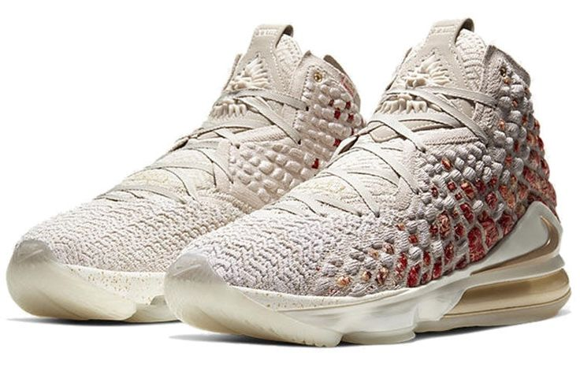
LeBron 17
Команда Джейсона Петри хотела объединить характеристики верха LeBron 15 и 16, чтобы получить легкий и при этом прочный материал с потрясающей 3D-текстурой.LeBron 17 вышли осенью 2018 года и сопровождали спортсмена на пути к его четвертому чемпионству в НБА.
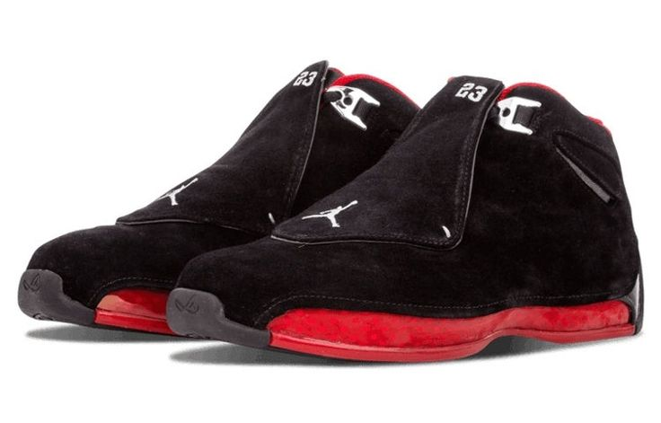
Air Jordan 18
В год выпуска Air Jordan 18 Майкл Джордан в третий раз объявил о завершении карьеры, оставив фанатов и любителей кроссовок с чувством благодарности и печали. В ознаменование его выдающейся карьеры Nike представила Air Jordan 18.Обувь демонстрировала роскошную эстетику с верхом из замши или кожи и изящной строчкой. Его гладкий и обтекаемый силуэт олицетворял элегантность и изящество MJ на площадке.
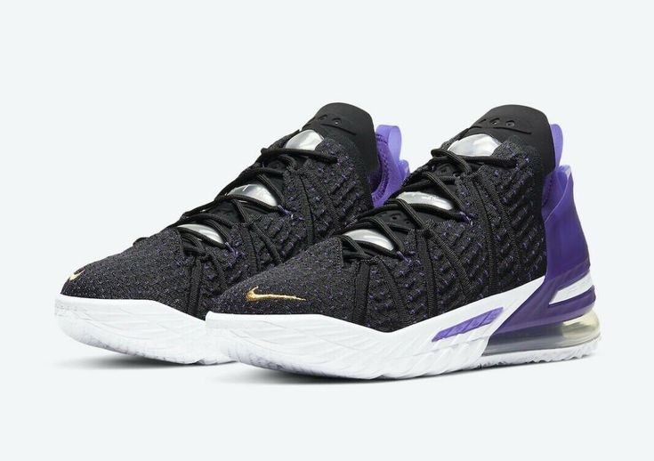
LeBron 18
К моменту выхода этой модели Леброн провел в сотрудничестве с Nike половину всей своей жизни. Конструируя LeBron 18, дизайнеры хотели отразить этот факт в характеристиках кроссовок.Релиз LeBron 18 прошел осенью 2020 года.
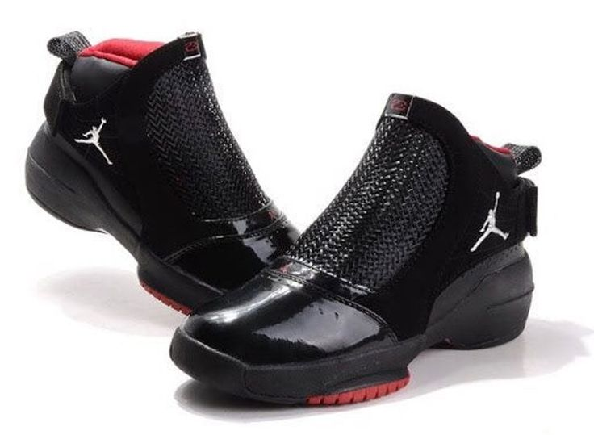
Air jordan 19
В 2004 году Nike представили Air Jordan 19, кроссовки, воплотившие в себе извращенную красоту африканских змей, в частности черной мамбы. Гением дизайна этого поразительного творения был Тейт Куэрбис, который дал волю своему воображению и воплотил в жизнь сущность змеи.Вдохновленная мамбой, обувь включала в себя уникальные текстуры и узоры, отражающие их скользящую грацию. Верх выполнен из сочетания материалов премиум-класса, что создает ощущение роскоши и элегантности.
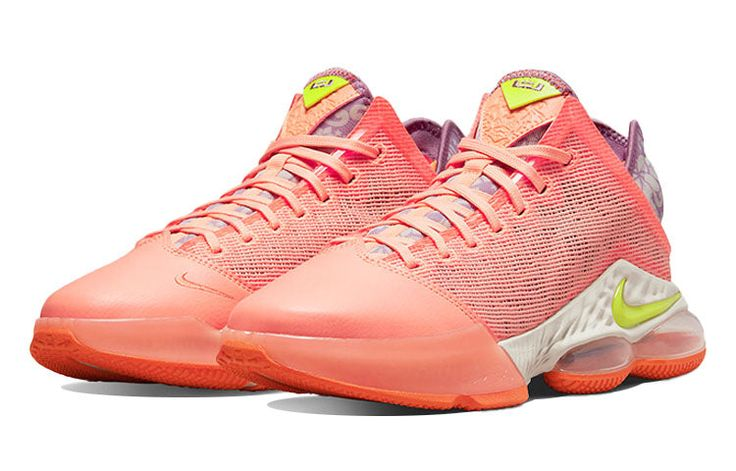
LeBron 19
Nike LeBron 19 сделали очередной шаг вперед. Кроссовки получили новые элементы и технологии, которые в сумме стали превосходным единым целым. Nike LeBron 19 - флагман в том виде, в котором мы хотим его видеть.
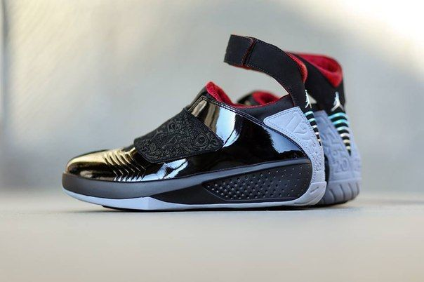
Air Jordan 20
Одним из самых замечательных элементов дизайна Air Jordan 20 были ямочки на боковых панелях, отмечающие самую результативную игру Майкла Джордана — потрясающий результат в 69 очков против «Кливленд Кавальерс».Сегодня Air Jordan 20 остаются любимым предметом коллекционеров.
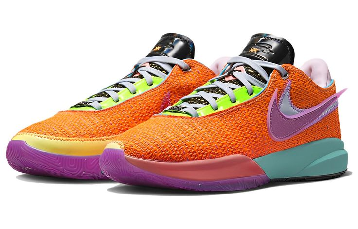
LeBron 20
Стоит отметить, что Nike LeBron XX - первые именные кроссовки Джеймса, которые сразу вышли в низкой версии. Да, почти все кроссовки “Короля” получали low-версии, но у Nike LeBron 20 нет высокой версии. Зато, нас ждет много разных вариантов верха и исполнения.Nike LeBron 20 отлично подойдут всем защитникам и форвардам, которые ценят комфорт, сцепление и уверенное переключение от стратегии к атлетичному проходу.